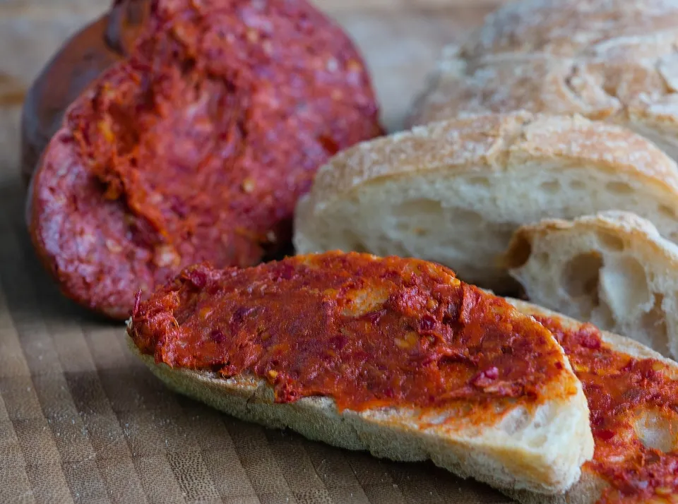
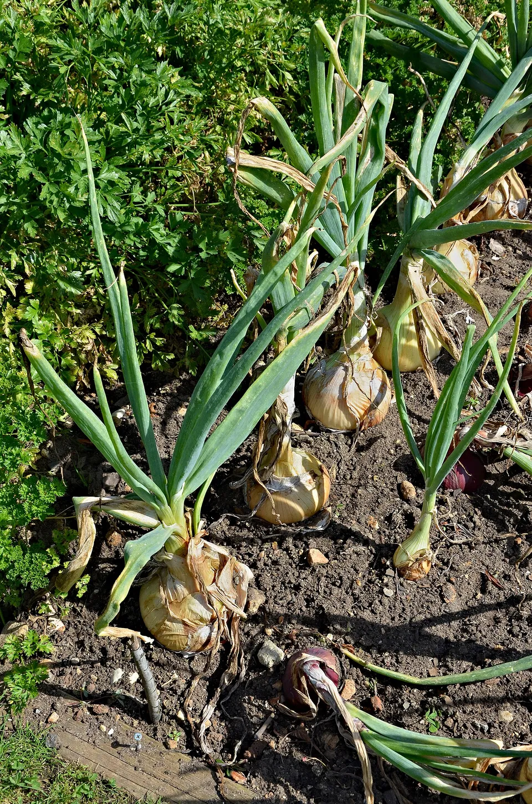

Le tradizioni culinarie della Costa degli Dei rappresentano l’anima autentica della Calabria, un’esplosione di sapori intensi e ingredienti genuini che profumano di mare, uliveti secolari e peperoncino, perfetti da gustare durante un soggiorno a Villa del Conte Santa Domenica vicino a Tropea e Santa Domenica di Ricadi. Questa cucina povera ma ricca di storia unisce influenze greche, romane e arabe, esaltando prodotti tipici calabresi DOP come la celebre cipolla rossa di Tropea, la ’nduja di Spilinga, il caciocavallo silano e la soppressata di Calabria, trasformando ogni pasto in un rito che celebra la fertilità della Costa degli Dei. Per chi cerca vacanze enogastronomiche Calabria o cosa mangiare a Tropea, da Villa del Conte si parte per sagre, frantoi e ristoranti sul mare dove fileja, stocco e granite di limone diventano il filo conduttore di un viaggio sensoriale indimenticabile.
Al centro della tavola calabrese troneggia la cipolla rossa di Tropea Calabria DOP, coltivata sui terreni vulcanici basaltici tra Santa Domenica di Ricadi e Tropea, dal gusto dolce e croccante che la rende regina di piatti iconici come la pasta alla cipolla rossa o le lagane con cipolle e acciughe. Non meno celebre la ’nduja di Spilinga, salume spalmabile piccante a base di maiale e peperoncino calabrese, nato come cibo dei poveri ma oggi star internazionale, da spalmare su pane casereccio, condire fileja (pasta arrotolata a mano tipica del vibonese) o fondere in zuppe di legumi. I salumi DOP come soppressata, capocollo, salsiccia e pancetta di Calabria – stagionati con finocchio e peperone – dominano gli antipasti, accompagnati da caciocavallo silano DOP e pecorino crotonese, formaggi a pasta filata dal sapore erbaceo, perfetti grattugiati su maccheroni al ferretto con ragù di maiale o capretto. Il pesce fresco della Costa degli Deiaggiunge poesia: pesce spada alla ghiotta con olive, capperi e pomodoro, stocco alla mammolese (merluzzo essiccato in umido piccante) e pasta ca’ muddica con acciughe e pangrattato tostato, piatti che esaltano il mare cristallino di Santa Domenica e Tropea.

Le ricette tradizionali della Costa degli Dei brillano per semplicità e stagionalità: lagane e ceci o fileja alla spilingota con ’nduja per i primi, polpette alla mammolese (carne di maiale, pecorino e peperoncino) e melanzane ripiene per i secondi, verdure grigliate come peperoni e cipolle farcite, il tutto annaffiato da Cirò DOC (rosso rubino dal Greco antico) o Lamezia IGT bianco fresco. Dolci come cudduraci pasquali (pane dolce con vino cotto), mostacciuoli al miele e gelati di Pizzo (tartufo al cioccolato) chiudono il banchetto, mentre granite di agrumi e fichi secchi sono spuntini perfetti sulle spiagge. Sagre estive – Cipolla Rossa a Tropea (giugno), ’Nduja a Spilinga (agosto) – e frantoi visitabili offrono laboratori e degustazioni, con olio extravergine Alto Crotonese DOP che irrora ogni portata.

Da Villa del Conte Santa Domenica, base ideale per tour enogastronomici, gli ospiti scoprono agriturismi, mercati contadini e chef che rivisitano tradizioni: prenotate ora la vostra vacanza per assaporare prodotti tipici Calabresi come la cipolla DOP e la ’nduja in un paradiso di gusto e mare, dove la cucina calabrese conquista palati e cuori nella perla del Tirreno.